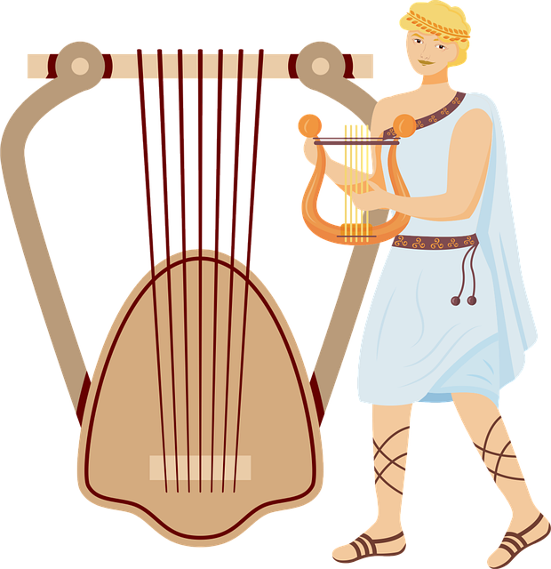

Learn about music
Unveiling the Origins of Music: A Journey to Its Beginnings
Music, a profound form of human expression, finds its origins deeply rooted in the fabric of our ancient past. Across civilizations and continents, the story of music unfolds as a testament to our innate human desire for rhythm and melody.
In the mists of prehistory, our ancestors discovered the power of sound. Through primitive vocalizations, they communicated, expressed emotions, and forged communal bonds. The beating of hands on hollow logs and stones marked the birth of rhythm, igniting a primal connection between humans and their environment.
As early humans progressed, so did their musical endeavors. Simple flutes carved from animal bones and percussive instruments made from shells and animal hides emerged, allowing for the creation of more intricate melodies and harmonies. These musical expressions accompanied rituals, celebrations, and the telling of stories, serving as a bridge between the earthly and the divine.
With the rise of ancient civilizations, music took on new dimensions. Mesopotamia, Egypt, Greece, and Rome witnessed the evolution of musical systems, incorporating instruments such as lyres, harps, and panpipes. Music played a vital role in religious ceremonies, honoring gods and invoking spiritual connections.
In ancient Greece, music became a formal discipline, with philosophers like Pythagoras exploring the mathematical foundations of harmonies and scales. The Greeks introduced the concept of musical modes and laid the groundwork for Western music theory, a legacy that endures to this day.
Music Periods, Time Periods, and Important Musicians
| Period | Time Period | Important Musicians |
|---|---|---|
| Ancient Period | Before the 5th century | Pythagoras, Aristoxenus, Mesomedes |
| Medieval Period | 5th to 15th century | Hildegard of Bingen, Guillaume de Machaut, Perotin |
| Renaissance | 15th to 17th century | William Byrd, Giovanni Palestrina, Claudio Monteverdi |
| Baroque | 17th to 18th century | Johann Sebastian Bach, George Frideric Handel, Antonio Vivaldi |
| Classical | 18th to early 19th century | Wolfgang Amadeus Mozart, Joseph Haydn, Ludwig van Beethoven |
| Romantic | 19th century | Franz Schubert, Frederic Chopin, Richard Wagner |
| 20th Century | 20th century | Igor Stravinsky, Arnold Schoenberg, Dmitri Shostakovich |
| Contemporary | 20th century to present | John Cage, Philip Glass, Steve Reich |
| This table showcases different music periods throughout history | ||
Post Greek era
Through the Middle Ages, music became intertwined with the Church. Gregorian chants soared within the hallowed walls of cathedrals, filling the air with sacred melodies and promoting a sense of divine transcendence. The medieval troubadours and minstrels roamed the lands, spreading stories and songs, enchanting audiences with their lyrical tales. The Renaissance brought a rebirth of artistic expression, and music flourished alongside painting, sculpture, and literature. Composers such as Josquin des Prez and Giovanni Palestrina embraced polyphony, creating intricate harmonies and intertwining melodies. The period also witnessed the development of new instruments, including the lute and the harpsichord.
Bach era
With the dawn of the Baroque era, music reached new heights of complexity and emotion. Composers like Johann Sebastian Bach and George Frideric Handel composed grand works that stirred the souls of listeners. Ornate compositions and the emergence of the orchestra showcased the technical prowess of musicians, immersing audiences in a world of sound. The Classical era brought a sense of order and balance to music. Mozart, Beethoven, and Haydn crafted elegant symphonies, string quartets, and piano sonatas, showcasing a refined musical language and introducing new structural forms. The age of enlightenment celebrated reason and clarity, with music reflecting these ideals.